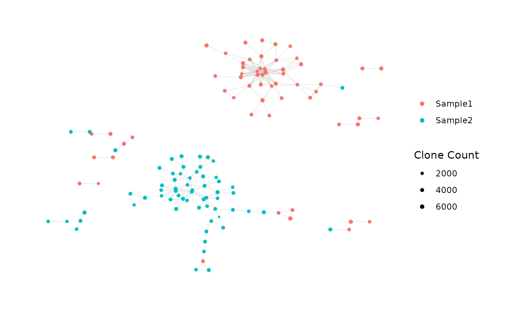

Plot the Graph of an Immune Repertoire Network
plotNetworkGraph.Rd
Given the igraph of an immune repertoire network,
generates a plot of the network graph according to the user specifications.
Deprecated. Replaced by addPlots().
Usage
plotNetworkGraph(
igraph,
plot_title = NULL,
plot_subtitle = NULL,
color_nodes_by = NULL,
color_scheme = "default",
color_legend = "auto",
color_title = "auto",
edge_width = 0.1,
size_nodes_by = 0.5,
node_size_limits = NULL,
size_title = "auto",
outfile = NULL,
pdf_width = 12,
pdf_height = 8
)Arguments
- igraph
An object of class
igraph.- plot_title
A character string containing the plot title. Passed to
labs().- plot_subtitle
A character string containing the plot subtitle. Passed to
labs().- color_nodes_by
A vector whose length matches the number of nodes in the network. The values are used to encode the color of each node. An argument value of
NULL(the default) leaves the nodes uncolored. Passed to the color aesthetic mapping ofgeom_node_point().- color_scheme
A character string specifying the color scale used to color the nodes.
"default"uses defaultggplot()colors. Other options are one of the viridis color scales (e.g.,"plasma","A"or other valid inputs to theoptionargument ofscale_color_viridis()) or (for discrete variables) a palette fromhcl.pals()(e.g.,"RdYlGn"). Each of the viridis color scales can include the suffix"-1"to reverse its direction (e.g.,"plasma-1"or"A-1").- color_legend
A logical scalar specifying whether to display the color legend in the plot. The default value of
"auto"shows the color legend ifcolor_nodes_byis a continuous variable or a discrete variable with at most 20 distinct values.- color_title
A character string (or
NULL) specifying the title for the color legend. Only applicable ifcolor_nodes_byis a vector. Ifcolor_title = "auto"(the default), the title for the color legend will be the name of the vector provided tocolor_nodes_by.- edge_width
A numeric scalar specifying the width of the graph edges in the plot. Passed to the
widthargument ofgeom_edge_link0().- size_nodes_by
A numeric scalar specifying the size of the nodes, or a numeric vector with positive entires that encodes the size of each node (and whose length matches the number of nodes in the network). Alternatively, an argument value of
NULLuses the defaultggraph()size for all nodes. Passed to the size aesthetic mapping ofgeom_node_point().- size_title
A character string (or
NULL) specifying the title for the size legend. Only applicable ifsize_nodes_byis a vector. Ifsize_title = "auto"(the default), the title for the color legend will be the name of the vector provided tosize_nodes_by.- node_size_limits
A numeric vector of length 2, specifying the minimum and maximum node size. Only applicable if
size_nodes_byis a vector. Ifnode_size_limits = NULL, the default size scale will be used.- outfile
An optional file path for saving the plot as a pdf. If
NULL(the default), no pdf will be saved.- pdf_width
Sets the plot width when writing to pdf. Passed to the
widthargument ofpdf().- pdf_height
Sets the plot height when writing to pdf. Passed to the
heightargument ofpdf().
Value
A ggraph object.
References
Hai Yang, Jason Cham, Brian Neal, Zenghua Fan, Tao He and Li Zhang. (2023). NAIR: Network Analysis of Immune Repertoire. Frontiers in Immunology, vol. 14. doi: 10.3389/fimmu.2023.1181825
Author
Brian Neal (Brian.Neal@ucsf.edu)
Examples
set.seed(42)
toy_data <- simulateToyData()
# Generate network for data
net <- buildNet(toy_data, "CloneSeq")
# Plot network graph
net_plot <- plotNetworkGraph(
net$igraph,
color_nodes_by =
net$node_data$SampleID,
color_title = NULL,
size_nodes_by =
net$node_data$CloneCount,
size_title = "Clone Count",
node_size_limits = c(0.5, 1.5))
#> Warning: `plotNetworkGraph()` was deprecated in NAIR 1.0.1.
#> ℹ Please use `addPlots()` instead.
print(net_plot)
